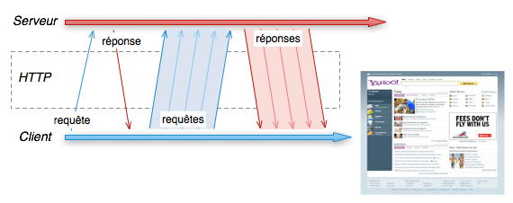
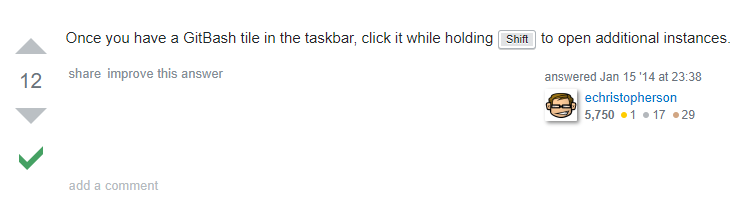
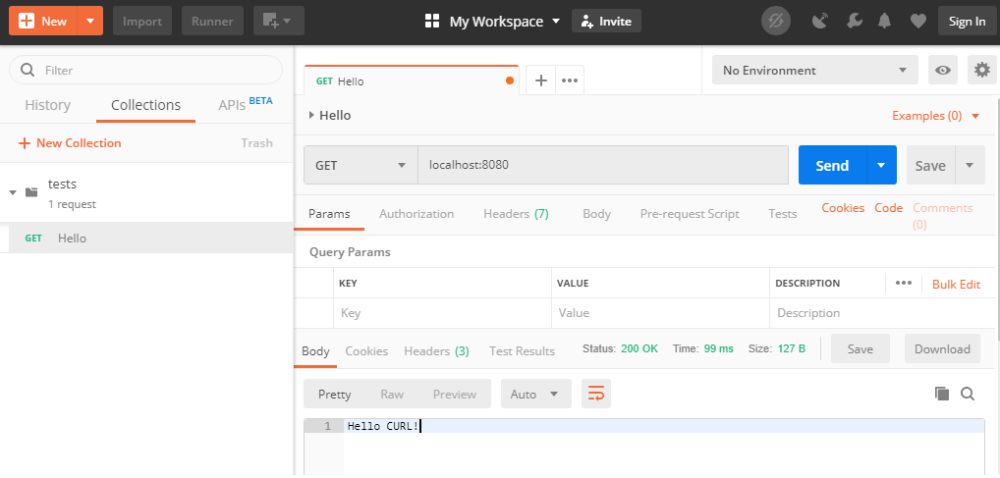
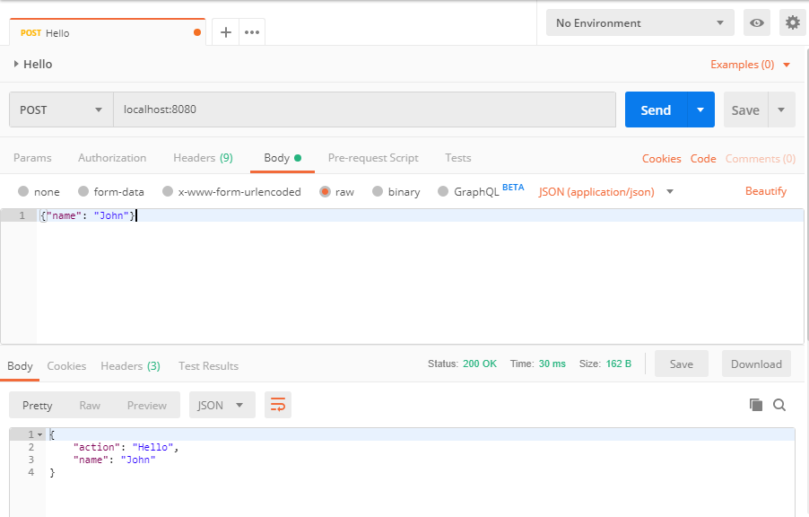

Le protocole HTTP
Il permet d'échanger des données avec des serveurs
Avec un navigateur web, il permet principalement de lire des pages web
Une page web contient de références vers des dizaines d'autres ressources (images, scripts, feuilles de style...)
Une reqête HTTP
Une requête HTTP contient :
- une ligne de requête : composé d'une méthode, le chemin et la version du protocole.
- des en-têtes : des clés / valeurs donnant des indications supplémentaires.
- un corps : des blocs de données supplémentaires utiles pour envoyer du contenu.
GET /actualites HTTP/1.1 Host: www.rtl.fr User-Agent: Mozilla/5.0 (Windows; U; Windows NT 6.1; fr; rv:1.9.2.12) Gecko/20101026 Firefox/3.6.12 Accept: text/html,application/xhtml+xml,application/xml;q=0.9,*/*;q=0.8 Accept-Language: fr,fr-fr;q=0.8,en-us;q=0.5,en;q=0.3 Accept-Encoding: gzip,deflate Accept-Charset: ISO-8859-1,utf-8;q=0.7,*;q=0.7 Keep-Alive: 115 Connection: keep-alive Referer: http://www.rtl.fr/
La première ligne contient la méthode : c'est l'action demandée par le client sur la ressource
| méthode | description | sûre | idempotente |
| GET | Le client demande une ressource |  |
|
| POST | Le client demande la création d'une ressource | ||
| PUT | Le client envoie une ressource vers une url | |
|
| DELETE | Le client demande la suppression d'une ressource | |
|
| HEAD | Le client demande des informations sur la ressource, sans la demander elle-même | |
|
| OPTIONS | Permet d'obtenir les options de communication d'une ressource ou du serveur en général | |
|
Seuls GET et POST sont possibles depuis un navigateur
Les headers permettent d'ajouter de l'information sur la nature de la requête
Voci quelques exemples
| header | description | exemple |
| Host | Le domaine vers lequel est fait la requête | Host: www.rtl.fr |
| Referer | Adresse de la page web précédent cette requête | Referer: http://www.rtl.fr |
| Accept | Types de contenu acceptés par le navigateur | Accept: text/plain |
| Accept-Language | Language acceptés par le navigateur | Accept-Language: fr-fr |
Cette liste est loin d'être figée
Une réponse HTTP
Une réponse HTTP contient :
- une ligne de statut : la version du protocole, le code de retour avec son libellé associé
- des en-têtes : des clés / valeurs donnant des indications supplémentaires
- un corps : la ressource demandée
HTTP/1.1 200 OK
Content-Type: text/html;charset=UTF-8
Content-Language: fr-FR
Content-Length: 57366
Date: Wed, 03 Nov 2010 21:42:30 GMT
Connection: keep-alive
<!DOCTYPE html PUBLIC "-//W3C//DTD XHTML 1.1//EN" "http://www.w3.org/TR/xhtml11/DTD/xhtml11.dtd">
<html xmlns="http://www.w3.org/1999/xhtml" xml:lang="fr">
<head>…</head>
<body>
…
</body>
</html>
Le code de retour résume le résultat de l'éxécution de la requête
| code | signification | description |
| 2xx | Succès | Tous les codes de succès |
| 200 | OK | Le corps contient le document demandé |
| 3xx | Redirection | Le client est rédirigé |
| 301 | Move permanently | Document déplacé de façon permanente |
| 302 | Found (Moved temporarly) | Document déplacé de façon temporaire |
| 304 | Not modified | Document non modifié depuis la dernière requête |
| 4xx | Erreur du client | La requête ne peut aboutir à cause du client |
| 400 | Bad Request | La syntaxe de la requête est erronée |
| 401 | Unauthorized | Une authentification est nécessaire |
| 404 | Not found | Document non trouvé |
| 5xx | Erreur du serveur | Le serveur n'a pu répondre correctement |
| 500 | Internal server error | Erreur interne du serveur |
Et également quelques exemples de headers de réponse
| header | description | exemple |
| Content-Type | Le type MIME de ce document | Content-Type: text/html; charset=utf-8 |
| Content-Length | La taille du document en octets | Content-Length: 348 |
| Cache-Control | Comment le document peut être mis en cache | Cache-Control: public, max-age=60 fr-fr |
| Age | Le document est en cache dans un proxy depuis ce temps | Age: 12 |
Outils
Le navigateur web est l'outil le plus courant pour faire du HTTP
Mais si il permet de visualiser les pages, il ne permet pas de facilement modeler des requêtes
curl
curl (client URL request library) est l'outil canonique pour tester des requêtes
➤ Par exemple, tester ce service en local
@RestController
class Hello {
@RequestMapping("/")
String home() {
"Hello CURL!"
}
}$ curl -s http://localhost:8080
Hello CURL!Sous windows faites un shift click sur Git Bash pour ouvrir plusieurs fenêtres
➤ Afficher les headers de réponse (l'option -I engendre une requête de type HEAD)
$ curl -sI http://localhost:8080
HTTP/1.1 200
Content-Type: text/plain;charset=UTF-8
Content-Length: 11
Date: Fri, 14 Jun 2019 06:55:33 GMTSi on change notre Controller afin de n'accepter que le POST
@RestController
class Hello {
@PostMapping("/")
String home() {
"Hello CURL!"
}
}➤ Tester un GET : le serveur retourne une erreur
Pensez à redémarrer le serveur
$ curl -sI http://localhost:8080
{"timestamp":"2019-06-14T06:58:34.357+0000","status":405,"error":"Method Not Allowed","message":"Request method 'GET' not supported","path":"/"}➤ Il faut donc desormais faire un POST
$ curl -s -X POST http://localhost:8080
Hello CURL!Il est possible de forger tous types de requêtes avec curl. C'est un outil simple et utile pour débugger
Postman
Postman est un outil graphique pour forger des requêtes
➤ Installez Postman
La création de compte est optionelle : Skip signing in and take me straight to the app
➤ Remodifier le code afin de repasser en GET
@RestController
class Hello {
@GetMapping("/")
String home() {
"Hello Postman!"
}
}➤ Et tester l'application
{kind=link}
json
Très couramment on utilise du json comme format de données
C'est un format assez simple à lire et écrire et surtout, il est compatible avec beaucoup de d'environnement
➤ Tester le code suivant avec Postman
@RestController
class Hello {
@GetMapping("/")
Map home() {
[action: 'Hello', name: 'Postman']
}
}➤ Quelle est la valeur du header Content-Type en retour ?
Repassons en POST afin de pouvoir envoyer des données dans le corps de la requête
➤ Changez le code pour le suivant
@RestController
class Hello {
@PostMapping("/")
Map home(@RequestBody Map params) {
[action: 'Hello', name: params.name]
}
}➤ Et tester avec un appel en POST contenant du json
{kind=link}
➤ Quelle est la valeur du header Content-Type dans la requête ?